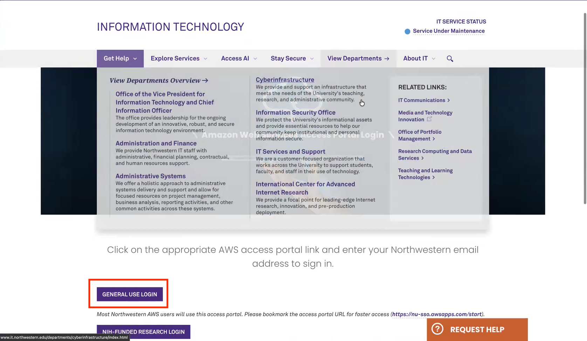
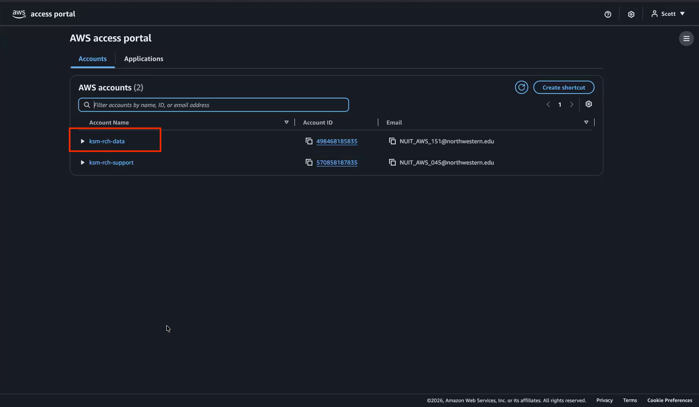
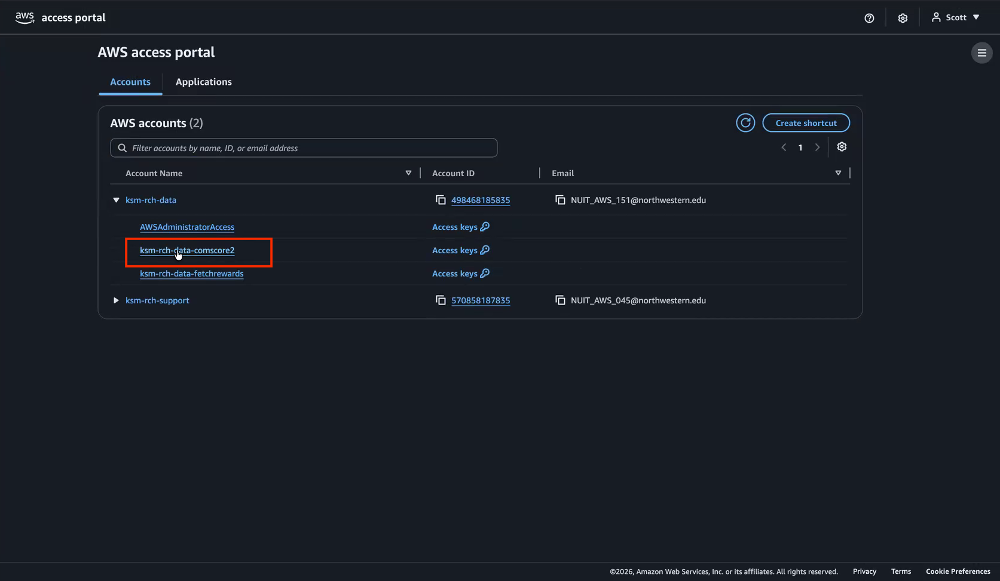
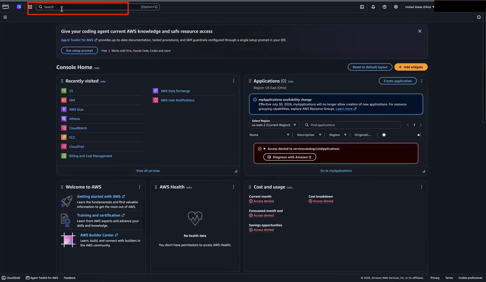
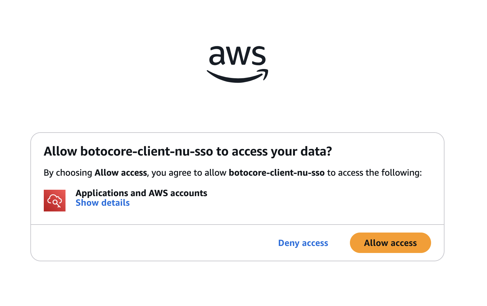
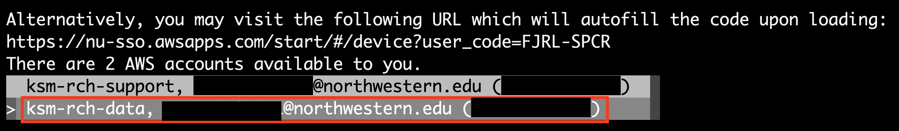
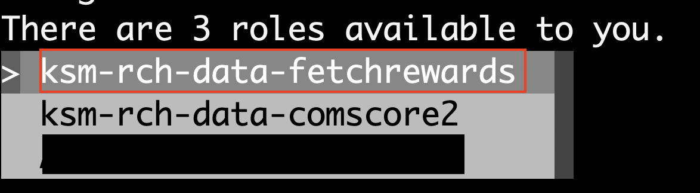
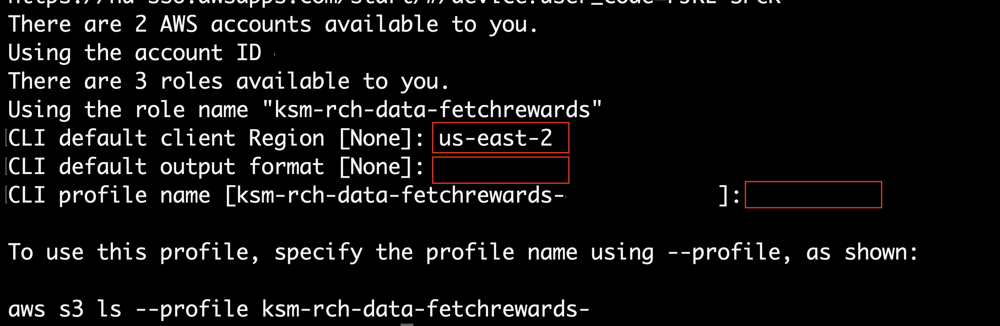

Athena (AWS)#
The Kellogg Data Hosting Athena platform is built on Amazon Athena, a serverless SQL query service. You can query Athena datasets either through the AWS web console or directly from KLC via an ODBC connection.
To request access to a specific dataset, contact rs@kellogg.northwestern.edu . Access is granted per database, not to the platform as a whole.
Important
Once logged in to AWS, you only have access to Athena. This account does not grant access to any other AWS service.
Choosing an Access Method#
Method |
Best For |
|---|---|
Exploring data, running ad-hoc SQL queries, downloading CSV results |
|
Integrating Athena data into Python, R, or Stata workflows on the cluster |
The AWS Console requires no local setup. The KLC path requires a one-time aws configure sso setup; in future sessions, refresh your SSO session with aws sso login (the default session length is 4 hours).
Accessing via the AWS Console#
Prerequisites:
A Northwestern NetID
Access to a specific Athena database already granted by Kellogg Research Support
No local setup or software installation
1. Log in to AWS#
Go to the NUIT AWS login page , click General Use Login, and authenticate with your Northwestern NetID.
On the AWS access portal, click the arrow next to ksm-rch-data to expand it.
Click Management console next to your database, for example
ksm-rch-data-comscore2.Confirm the Region in the upper right is US East (Ohio) (us-east-2).
Screenshots: Logging In to AWS
1. NUIT AWS login page
{kind=link}

2. AWS access portal
{kind=link}

3. ksm-rch-data expanded
{kind=link}

4. AWS Console Home
{kind=link}

{kind=link}
{kind=link}
{kind=link}
3. Query and Download Results#
Type your SQL query in the editor and click Run. The status bar below the editor shows the query progress.
When the query completes, click Download results CSV in the Query results panel to save the output to your computer.
Screenshots: Querying and Downloading Results
{kind=link}
{kind=link}
Accessing via KLC#
Querying Athena from KLC lets you integrate Kellogg Data Hosting datasets into Python, R, or Stata workflows running on the cluster.
Prerequisites:
A KLC account and an active terminal session on KLC
Access to a specific Athena database already granted by Kellogg Research Support
The
awscli/latestmodule on KLC, which provides AWS CLI 2.22.7 (aws configure ssorequires 2.9.0 or later)
Note
Where to run queries: Short interactive queries are fine on a KLC login node. Do not pull large result sets on a login node — see When to Use KLC Reserve for the 24-core policy and batch options. Use tmux to keep sessions alive after disconnecting.
1. Load the AWS CLI#
module load awscli/latest
Optionally confirm the version:
aws --version
2. Configure NetID Authentication#
KLC login nodes have no GUI browser. AWS CLI 2.22.0 and later also default to a PKCE authorization flow that cannot complete on a login node. Use aws configure sso --no-browser --use-device-code and enter the values below when prompted:
Prompt |
Value |
|---|---|
SSO session name |
|
SSO start URL |
|
SSO region |
|
SSO registration scopes |
Accept the default ( |
aws configure sso --no-browser --use-device-code
Note
--use-device-code is required on AWS CLI 2.22.0 and later. On AWS CLI older than 2.22.0, --use-device-code is not recognized; those versions already use the device-code flow, so --no-browser alone is enough.
To avoid passing the --use-device-code flag on every SSO command, add export AWS_CLI_SSO_RETRY_MODE=device-code to ~/.bashrc.
Copy the URL the CLI prints into a browser on your local machine, sign in with your NetID, and pass the Duo MFA challenge.
Choose Allow access when the browser asks to authorize
botocore-client-nu-sso.Back in the terminal, arrow-key to ksm-rch-data and press Enter. Do not select any other AWS account.
Select the role matching your database, for example
ksm-rch-data-fetchrewards.Enter
us-east-2for the default region, then press Enter to accept the defaults for output format and profile name. The default profile name isksm-rch-data-<database>-<account-id>.
Screenshots: Configuring NetID Authentication
2. Allow access
{kind=link}

3. Select AWS account
{kind=link}

4. Select role
{kind=link}

5. CLI options
{kind=link}

Warning
Note the exact profile name the CLI prints at the end of setup. You will pass this name to --profile and AWS_PROFILE in later steps.
Tip
If you have access to multiple accounts or roles, copy the profile block that aws configure sso writes to ~/.aws/config for each additional account or role, reusing the same sso_session (nu-sso). You can then choose which profile to use for each AWS CLI command without re-authenticating.
Note
The default SSO session length is 4 hours. In future sessions, if you are not prompted to log in automatically when running an AWS CLI command, run the command below.
aws sso login --sso-session nu-sso --no-browser --use-device-code
For more details, see Configuring IAM Identity Center authentication with the AWS CLI .
3. Verify Access#
Verify your SSO profile works by listing accessible S3 buckets:
aws s3 ls --profile <account-profile>
Replace <account-profile> with the profile name from step 2 (for example, ksm-rch-data-comscore2-<account-id>).
Video: Load AWS CLI and verify credentials
4. Set Up the ODBC Environment#
The shared ODBC configuration at /kellogg/software/.odbc/<workgroup-name> must use AuthenticationType=Default Credentials so the driver reads the SSO token that aws sso login cached under ~/.aws/sso/cache. Export your profile name alongside the ODBC paths:
export ODBCSYSINI=/kellogg/software/.odbc/<workgroup-name>
export ODBCINI=/kellogg/software/.odbc/<workgroup-name>
export AWS_PROFILE=<account-profile>
Replace the placeholders in the commands above:
<workgroup-name>— your Athena workgroup, for examplecomscore2. This is the workgroup shown in the upper right of the Athena Query editor, not the database name in the left panel.<account-profile>— the profile name from step 2
If ODBC commands fail to pick up your SSO token, export static credentials from your active SSO session into the environment:
eval "$(aws configure export-credentials --profile <account-profile> --format env)"
Both Default Credentials and IAM Profile with credential_source=Environment accept these environment variables.
Video: Set up ODBC environment
5. Copy and Run a Sample Script#
Sample files for each language are at /kellogg/software/aws_odbc_samples on KLC. Copy them to your working directory:
mkdir -p ~/athena-work
cp /kellogg/software/aws_odbc_samples/* ~/athena-work/
cd ~/athena-work
module load mamba/24.3.0
mamba create -p /kellogg/proj/<your-netid>/envs/athena python=3.10 # choose your Python version
source activate /kellogg/proj/<your-netid>/envs/athena
mamba install pyodbc # or pip install pyodbc
See Conda Environments on KLC for full environment setup.
Edit athena_odbc.py with your database name and table name, then run:
python athena_odbc.py
module load R/4.5.1
Edit athena_odbc.R with your database name and table name, then run:
Rscript athena_odbc.R
module load stata/17
Edit athena_odbc.do with your database name and table name, then run:
stata-mp -b athena_odbc.do
Video: Connect from Python
Video: Connect from R
Video: Connect from Stata
Query Limits and Reducing Data Scanned#
Most Athena databases have a daily query limit of 2 TB of data scanned, whether you query from the AWS Console or from KLC. Contact rs@kellogg.northwestern.edu if you need this limit increased.
Athena charges by data scanned, not rows returned. After each query, check the Data scanned value in the Query editor results panel before running follow-up queries.
To stay under the limit:
Filter on partition columns (such as date or year) whenever the table schema supports it
Select only the columns you need instead of using
SELECT *Use Generate table DDL to inspect the schema before writing queries
Troubleshooting#
AWS CLI or ODBC commands fail with an authentication or token error
If AWS CLI or ODBC commands fail with an authentication or token error, your SSO session has expired. Run:
aws sso login --sso-session nu-sso --no-browser --use-device-code
aws configure sso or --no-browser is not recognized, or the SSO flow hangs
If the CLI reports that aws configure sso or --no-browser is not recognized, an older awscli module is loaded. Run module load awscli/latest and try again.
If the SSO flow hangs or reports a connection or callback error instead of printing a URL and code, device-code mode was not requested. Add --use-device-code to the command, or set AWS_CLI_SSO_RETRY_MODE=device-code in ~/.bashrc.
Your database does not appear under ksm-rch-data
If your database does not appear under ksm-rch-data in the AWS access portal, access has not been granted yet. Email rs@kellogg.northwestern.edu with the dataset name.
Athena returns no tables, or queries fail immediately
Athena queries fail or return no tables when the region is not US East (Ohio) (us-east-2). Confirm the region in the upper right of the AWS Console before opening the Query editor.
A sample script cannot connect through ODBC
If a sample script fails to connect, verify all of the following:
The ODBC environment variables from step 4 are set in your current shell session
<workgroup-name>matches your Athena workgroup, not the database nameAWS_PROFILEmatches the profile name from step 2Your SSO session is active (
aws sso login --sso-session nu-sso --no-browser --use-device-code)
Datasets on Athena#
The dataset pages below document a selected subset of datasets hosted on the Athena platform with documentation on this site.
Note
The datasets listed below are a selected subset with documentation on this site, not an exhaustive catalog. For an exhaustive list of datasets available to Kellogg researchers, see the Kellogg Research Support Datasets page .
For the full Kellogg Data Hosting overview, see Kellogg Data Hosting. For access requests or questions, see Getting Help.